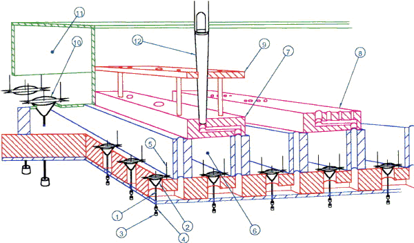

Vzdušnice janovických
varhan má rejstříkové kancely (kanály s přívodem vzduchu jsou společné
pro každý rejstřík, každá píšťala má svůj ventil). Rejstříkové i tónové
ventily jsou kuželkové, kuželky jsou dřevěné, těsněné kůží, pod vzdušnicí
jsou ventily těsněné plstěnými kroužky, velké ventily pak koženými váčky
– pulpetami. |

Vzduch ze vzduchovodu 11 je pomocí rejstříkového ventilu 10 vpuštěn do rejstříkové kancely 6. V kancele jsou tónové ventily, sestávající z hřídelky 1, na které jsou našroubovány: stavěcí kroužek 3, těsnění 4 a vlastní kuželka 2. Ventil se pohybuje po dvojici vodících kolíků 5. Vzduch je po otevření ventilu veden do píšťalnice 7, která jej dovede až do místa, kde stojí píšťala 12. Ta je proti převrácení zajištěna stoličkou 9. Rozvod pro čtveřici píšťal Mixtury je přímo v píšťalnici 8 (ventil je pro celou čtveřici jen jeden). Na obrázcích je detail ventilů v kancele po odstranění píšťalnic a pohled na vzdušnici zespodu. |
[obsah, skříň a hrací stůl, vzdušnice, měch a regulátor, traktura, uspořádání a údržba]

 (na
obsah)
(na
obsah)  (zpět,
dále)
(zpět,
dále)